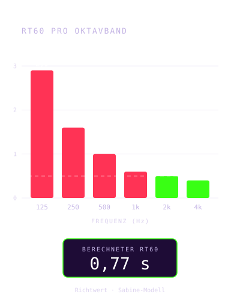
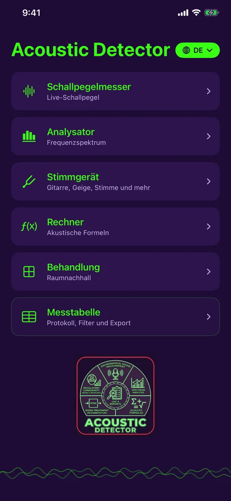
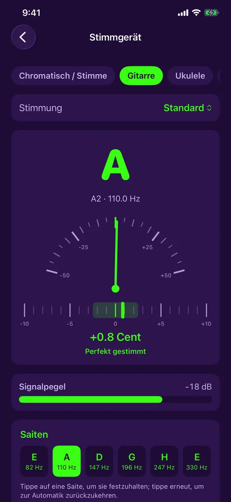
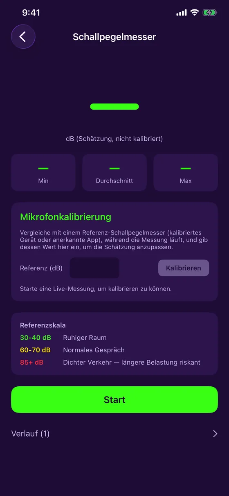
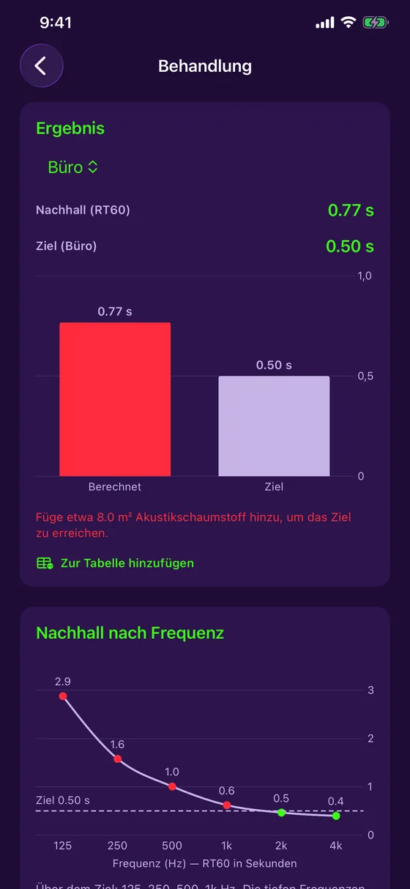
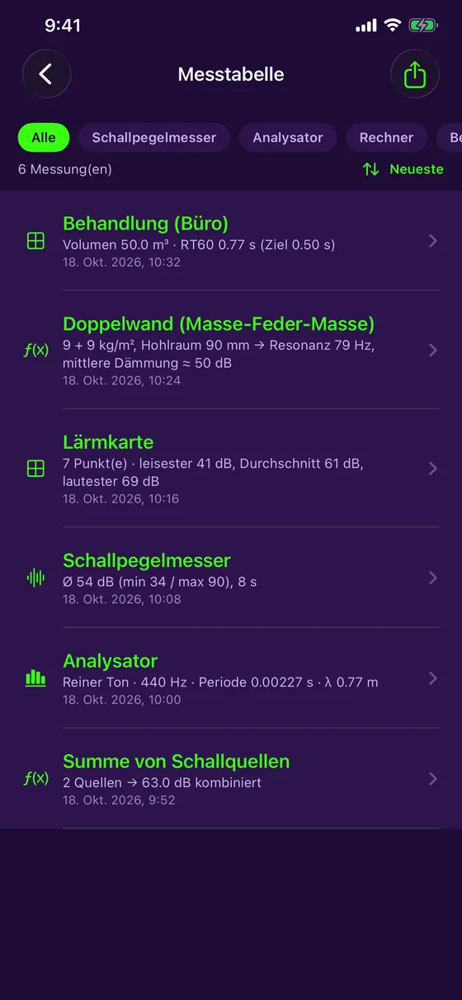
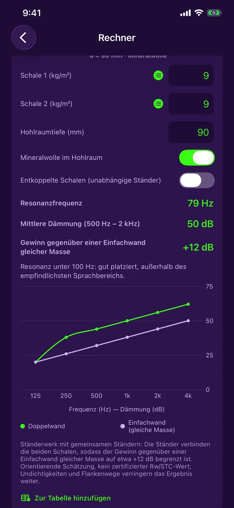
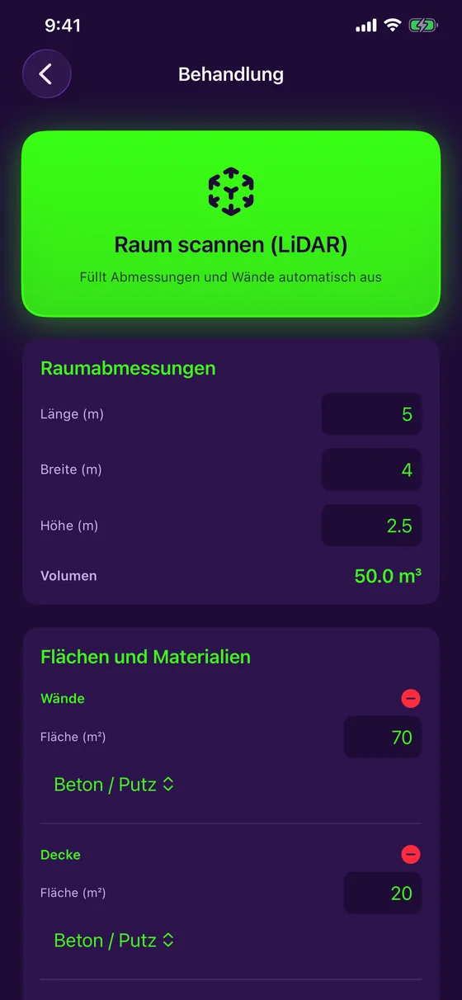

Schallmessung und Raumakustik
Hören. Analysieren. Verbessern.
Acoustic Detector macht Ihr iPhone zum Akustik-Werkzeug. Messen Sie Lärm, analysieren Sie das Spektrum, scannen Sie einen Raum per LiDAR und finden Sie heraus, wo er hallt und wie viel Akustikschaumstoff nötig ist. Kostenlos, 100 % offline, in 7 Sprachen.

Version 1.4.1: ein kostenloses, stabileres und genaueres Stimmgerät
Acoustic Detector bietet ein kostenloses Stimmgerät für Gitarre, Ukulele, Geige und mehr und spricht Deutsch, Französisch, Englisch, Spanisch, Portugiesisch, Italienisch und Japanisch.
- Kostenloses Stimmgerät: Gitarre (5 Stimmungen), Ukulele (auch Low-G und Bariton), Geige, Bratsche, Cello, Mandoline, Banjo und ein chromatischer Modus für die Stimme
- Version 1.4.1: stabilere Anzeige, die vereinzelte Ausreißer ignoriert, präzisere Nadel, Pegelanzeige für das Signal
- Notennamen als Do Re Mi oder C D E je nach Sprache, und eine Vibration, wenn gestimmt ist
- 7 Sprachen, wählbar im Hauptmenü
- RT60 pro Oktavband, von 125 Hz bis 4 kHz, gegen Ihren Zielwert
- Lärmkarte: an mehreren Stellen messen und eine Heatmap erhalten
- Doppelwand: Resonanzfrequenz und Dämmung pro Frequenz
- Die App ist kostenlos: Schallpegelmesser, Analysator, Stimmgerät, Messtabelle und PDF-Export inklusive; Raumbehandlung und Rechner mit einem Einmalkauf
Version 1.4.1 ist im App Store verfügbar.
Ein Richtwert-Werkzeug, ehrlich dargestellt. Das iPhone-Mikrofon ist kein zertifiziertes Messgerät: Die angezeigten Werte sind Schätzungen und als solche gekennzeichnet, mit optionaler manueller Kalibrierung für mehr Genauigkeit. Acoustic Detector ersetzt kein kalibriertes Messgerät für offizielle, normgerechte Nachweise.
Was Acoustic Detector kann
Ein Gerät zum Messen und Verbessern
Live-Schallpegelmesser
Pegel in dB in Echtzeit, mit Minimum, Mittelwert und Maximum, Mikrofonkalibrierung und farbigem Verlauf.
Spektrumanalysator
Live-Frequenzanalyse mit Reinton-Erkennung: Frequenz, Periode und Wellenlänge.
Raumbehandlung
Die Nachhallzeit (RT60) im Vergleich zum Zielwert für Ihren Zweck und die Menge Akustikschaumstoff, die fehlt.
LiDAR-Scan
Am iPhone Pro den Raum abfahren: Maße und Fläche jeder Wand füllen sich von selbst.
Lärmkarte
Den Pegel an mehreren Stellen messen und ruhige und laute Zonen auf einer Heatmap erkennen.
Stimmgerät
Gitarre, Ukulele, Geige, Bratsche, Cello, Mandoline, Banjo oder jeder beliebige Ton und Ihre Stimme: Nadel und Cent in Echtzeit.
Rechner
Summe von Schallquellen, Schalldruck, Frequenz und Wellenlänge sowie Doppelwand-Berechnung.
Vorschau
Klar, präzise, bereit für den Einsatz







Für wen
Von der Baustelle bis ins Studio
Handwerker und Techniker
Den Lärm eines Ortes messen, eine Trennwand prüfen, die Raumbehandlung vor dem Angebot abschätzen.
Studios, Musiker, Audio
Den Nachhall eines Raums berechnen, problematische Bassfrequenzen erkennen, den nötigen Schaumstoff abschätzen und Instrumente stimmen.
Zuhause und Büro
Heimkino, Homeoffice, Besprechungsraum: herausfinden, wo es hallt und was dagegen hilft.
Preis
Kostenlos, mit einem optionalen Einmalkauf
Kostenlos
- Live-Schallpegelmesser und Kalibrierung
- Spektrumanalysator
- Stimmgerät (Gitarre, Geige, Stimme und mehr)
- Messtabelle
- PDF-Export mit Diagrammen
Komplett
- Alles aus der kostenlosen Version
- Raumbehandlung: RT60, Absorption, LiDAR-Scan, Lärmkarte
- Rechner: Quellen, Druck, Wellen, Doppelwand
- Kein Abo
Der Preis wird vom App Store je nach Land angezeigt. Wenn Sie die App gekauft haben, bevor sie kostenlos wurde, bleibt automatisch alles freigeschaltet.
Bereit, Ihren Raum zu hören?
Acoustic Detector ist im App Store für das iPhone erhältlich. Kostenlos, mit einem optionalen Einmalkauf.
Laden im App Store